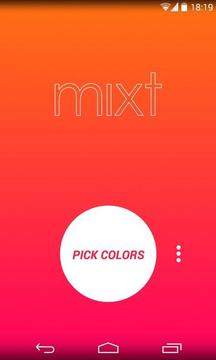
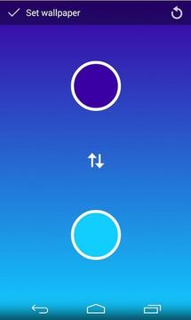

我用 Mixt 做了三天壁纸，发现这可能是安卓上最干净的渐变工具
一款不到 2MB 的安卓壁纸小工具，主打两色渐变、色轮取色和波点图案。三天上手体验下来，它的极简设计和无广告承诺让我印象深刻，但功能边界也很明确。
前几天刷到一个帖子，楼主在问有没有安卓上"没有广告、没有多余权限、就是用来做渐变壁纸"的小工具。底下有人回了 Mixt 这个名字，我随手搜了一下它的官网——安装包才 1 点几 MB，不在主流商店，得通过下载渠道拿安装包，靠网盘分享流通。抱着试试看的心态转存了一份，装到手机上。
现在三天过去了，我的桌面从默认壁纸换成了三种不同配色的渐变，锁屏也单独调了一套。说实话，我没想到这么一个体积的工具能让我玩这么久。
第一眼：极简到几乎"没有界面"
打开 Mixt 的瞬间，我愣了一下——没有欢迎页、没有权限弹窗、没有开屏广告，屏幕上直接就是一面渐变色。上下各一个小圆点，底部一排操作按钮。这就是它的全部 UI。

我之前用过的壁纸工具，多少都有点"想教你怎么用"的设计：首次引导、功能介绍卡片、甚至是"专业版"升级入口。Mixt 完全没有这些。打开就能调颜色，调完就能上墙，或者存到相册。如果你不知道某个按钮是干嘛的，点一下试试看，按错了也不会有什么代价——没有"撤销次数用完请看广告"这种东西。

它的权限也极简：振动反馈、存储读取（保存图片用）、以及写入系统壁纸。没了。我特意去设置里查了一下，真的就这三项。
两个核心体验，让我留着它没删
色轮 + Hex 输入，配色控的快乐
Mixt 的核心玩法就是两色渐变。上面选一个颜色，下面选一个颜色，中间自动生成垂直渐变。看起来简单，但实际用起来有讲究。
色轮的手感调得不错——拖动色相环时颜色过渡很顺滑，明度滑杆也不会出现跳色。但真正让我觉得"这工具考虑过较真用户"的，是它支持直接输入 Hex 色值。
这个功能放在今天的同类工具里，其实并不常见。大多数小工具只给色轮让你用手点，点出来是什么就是什么。但如果你想精确复刻某个颜色——比如我司品牌手册里的蓝 #1E88E5，或者某款 App 的主题色——色轮凭手感永远差那么一点。Hex 输入就不一样了，你和朋友敲同一个码，出来的渐变就是一模一样的。
这三天里我大概调了有十来套配色，其中三套是靠 Hex 输入精确复刻的。最满意的一套是深蓝 #0D47A1 配浅蓝 #64B5F6，放在我的深色桌面上几乎完美融入，但又不会和桌面图标打架。
桌面长按调壁纸：一个被低估的入口
Mixt 从 2.0.1 版本开始支持注册到安卓启动器的壁纸选择器列表里。什么意思呢——你不用特意打开应用，在桌面长按空白处，选"壁纸"，系统列出的壁纸来源里就有 Mixt。点进去，调个配色，直接上墙。
这个入口看似只是个快捷方式，但实际使用频率远超直接打开应用。想想看：想换个配色的时候，你是愿意退到应用列表找图标，还是在桌面上长按两秒？显然是后者。
我特意确认了一下版本，手里这份是 2.0.x，所以功能都在。之前担心的深度定制桌面不读系统壁纸来源列表的情况，在我的原生系统上没遇到问题——如果想了解这块系统级注册的技术细节，可以翻mixt文档。
它不会做什么：诚实说说边界
Mixt 确实"干净"，但这份干净的代价是功能边界非常清晰。
它不是壁纸图库——你打开应用不会看到海量的预置壁纸让你挑。它也不做 AI 生成、不做特效滤镜、不支持导入照片自动生成渐变。如果你想找"帮我一键生成好看壁纸"的工具，Mixt 不是那个方向。
它也不提供社区分享。你做出来的渐变只能自己存相册、自己用。想看看别人做了什么配色，只能去论坛或者社交平台搜。
还有一点：如果你是那种喜欢折腾锁屏和桌面用不同壁纸的人，Mixt 在这方面支持有限。2.0 版本之后确实加了分别设置锁屏/桌面的选项，但我试了几次，不同机型上的表现不完全一致，有时候锁屏设完又被桌面覆盖了。这可能和安卓碎片化有关，但体验上确实打折扣。

适合谁，不适合谁
说了这么多，给个直接的结论：
如果你是那种"想让桌面配色好看但不想花太多精力折腾"的人，或者对应用的广告和权限特别敏感，Mixt 值得留。它小、快、干净，核心功能扎实。
如果你期待一个"什么都能做"的全能壁纸工具——海量素材、AI 生成、特效编辑、社区分享——那 Mixt 肯定让你失望。它就是一个渐变生成器，专注做好这一件事。
三天用下来，我换了三套配色，现在这套深蓝渐变还在用。不会换得太勤，但每次想调整的时候，我知道打开 Mixt 就能搞定，而且不用担心弹出广告或者被要求升级会员。这种"用完即走、走了还回来"的工具，在安卓生态里其实已经不多了。顺带一提，这款小工具没有上架国内商店，我把它的安装包和文档镜像分别放在了GitHub、Gitee和GitCode，国内访问优先 Gitee 会快很多。